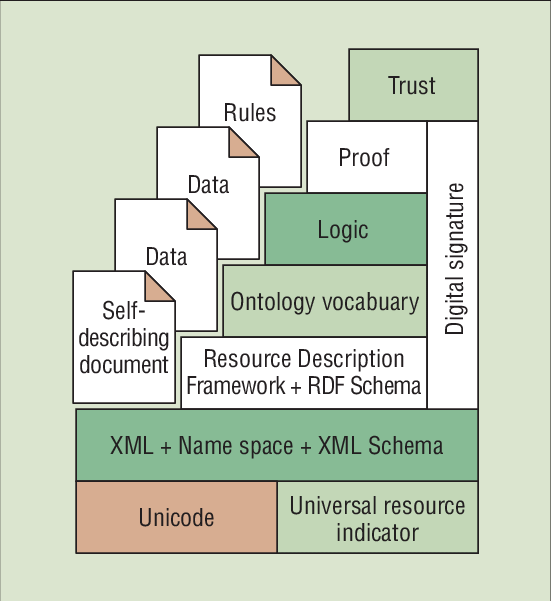

Semantic Web - Konzept & Erläuterung#
Definition & theoretische Grundsätze#
Bevor wir beginnen, uns mit der praktischen Arbeit von Metadatensuchen mit der SPARQL-Abfragesprache zu beschäftigen, müssen wir uns den Konzepten und Spezifikationen widmen, die maßgebend für die Struktur von RDF-Daten, das Verständnis von Ontologien und die Formulierung effektiver Abfragen sind. Es wäre sinnvoll mit Semantic Web zu beginnen.
Das Semantic Web ist eine neue Generation von Webtechnologien, die darauf abzielt, die Kommunikation zwischen Menschen, die unterschiedliche Terminologien verwenden, zu verbessern [Hen03]. Menschen benutzen grundsätzlich unterschiedlichen Wortschatz, selbst wenn sie über die gleichen Themen sprechen oder schreiben. Von daher ist es vernünftig, über eine Art “Klebstoff” zu verfügen, die die Interoperabilität von Datenbanken erweitert und Werkzeuge für die Interaktion mit multimedialen Sammlungen bietet. Darüber hinaus ermöglicht das Semantic Web neue Mechanismen zur Unterstützung des “agentenbasierten” Rechnens, bei dem Menschen und Maschinen interaktiver zusammenarbeiten.
Im Gegensatz zum aktuellen Web, das Links zwischen Seiten bereitstellt, die für den menschlichen Konsum gedacht sind, ergänzt das Semantic Web diese Struktur um Seiten, die maschinenlesbare Beschreibungen von Webseiten und anderen Webressourcen enthalten. Diese Dokumente können so miteinander verknüpft werden, dass der Computer Informationen darüber erhält, wie die Begriffe in einem Dokument mit den Begriffen in einem anderen in Beziehung stehen.
Um dies zu erreichen, verwendet das Semantic Web neue Websprachen, die auf RDF (Resource Description Framework) basieren. RDF ist ein Standardmodell zur Beschreibung von Informationen im Web, das es ermöglicht, Daten in einer maschinenlesbaren Form zu strukturieren und zu verknüpfen. Diese Sprachen gehen über die Präsentationsmöglichkeiten von HTML (Hypertext Markup Language), die auf den meisten heutigen Webseiten verwendet wird, und die Dokumenten-Tagging-Funktionen von XML (Extensible Markup Language) hinaus. RDF ermöglicht es, Beziehungen zwischen Ressourcen darzustellen und unterstützt die Interoperabilität zwischen verschiedenen Datenquellen, was für die Entwicklung intelligenter Anwendungen von entscheidender Bedeutung ist.
Insgesamt zielt das Semantic Web darauf ab, die Art und Weise zu revolutionieren, wie Informationen im Internet strukturiert und interpretiert werden, wodurch eine intelligentere und effizientere Interaktion zwischen Benutzern und Maschinen ermöglicht wird. Tatsächlich ist das Semantic Web die natürliche Entwicklung von dem World Wide Web, wie gedacht von dem Informationswissehschaftler Tim Berners-Lee. Wenn Web 1.0 auf verlinkten Webseiten beruhte, und Web 2.0 - verlinkten Apps, steht Web 3.0 in Beziehung mit verlinkten Daten (https://www.techtarget.com/searchcio/definition/Semantic-Web).
“Layer cake” Architektur#
 Abbildung 1: Der Semantic Web Layer Cake Bildquelle: [Hen01]
The Semantic Web “layer cake” presented by Tim Berners-Lee at the XML 2000 conference.
Auf der obenstehenden Grafik wird die Struktur vom Semantic Web dargestellt als eine geschichtete Architektur, indem verschiedene Technologien und Konzepte zusammenkommen und interagieren, um das Framework von sinnvollen und strukturierten Daten und den Bezügen darunter zu unterstützen. Wir gehen stufenmäßig bei der Erklärung jeder Schicht vor:
Unicode & URI (Universal Resource Indicator) - Unicode in der Grundschicht stellt sicher, dass der ganze Text konsistent repräsentiert durch eine globale Codierung von allen Zeichen wird. URI dient als Standartidentifikator für alle Ressourcen im Web.
XML, Namespace, & XML Schema - eXtensible Markup Language (XML) ist ein flexibles Textformat für Datenstrukturierung. Es ist eine Datenvermittlungswerkzeug. Namespace verhilft dazu, Namenkonflikte durch die Identifizierung von Vokabularien zu vermeiden. XML-Schemata definieren die Struktur und Datentypen von XML-Dokumenten durch die Feststellung von Regeln diesbezüglich.
RDF (Resource Description Framework) & RDF Schema - die schon obenerklärten Konzepte werden mit eingewoben, damit Informationen über Datenressourcen strukturierend dargestellt werden können.
Ontology & Vocabulary - die Ontologie bietet eine Möglichkeit, strukturierte Vokabulare zu definieren, die Beziehungen und Kategorien in einem bestimmten Bereich beschreiben (z. B. „eine Katze ist ein Tier“). Diese Schicht ist entscheidend, um Maschinen zu ermöglichen, Beziehungen zwischen verschiedenen Datenpunkten zu verstehen und so Schlussfolgerungen und logische Ableitungen zu unterstützen. Das Vokabular bezieht sich auf die spezifischen Begriffe und Konzepte, die verwendet werden, um Entitäten und Beziehungen in einem Wissensbereich zu beschreiben.
Logik - die Logik ermöglicht automatisierte Prozesse von Entscheidungstreffen aufgrund strukturierter Daten.
Proof - die Prüfschicht sorgt für valide Ergebnisse durch die Validierung von den Schritten, die zu einer Schlussfolgerung führen.
Trust - die oberste Schicht der Architektur setzt sich mit der Etablierung der Vertrauenwürdigkeit der Daten durch Authentifizierungsmechanismen und die Prüfung der Zuverlässigkeit der Datenquellen. Ein wichtiger Bauteil, der auf mehreren Schichten mitwirkt, ist die digitale Signatur als Technologie, die die Datenintegrität sicherstellt und die Nachprüfung davon, wer die Daten erstellt hat.
Das Konzept von verlinkten Daten, oder Linked Data ist wichtig für die vollkommene Durchsetzung einer erfolgreichen Semantic-Web-Struktur. In unseren vorherigen Fallstudie über die Reproduzierbarkeit von Datenanalysen haben wir uns eben mit diesem Konzept auseinandergesetzt - hier.